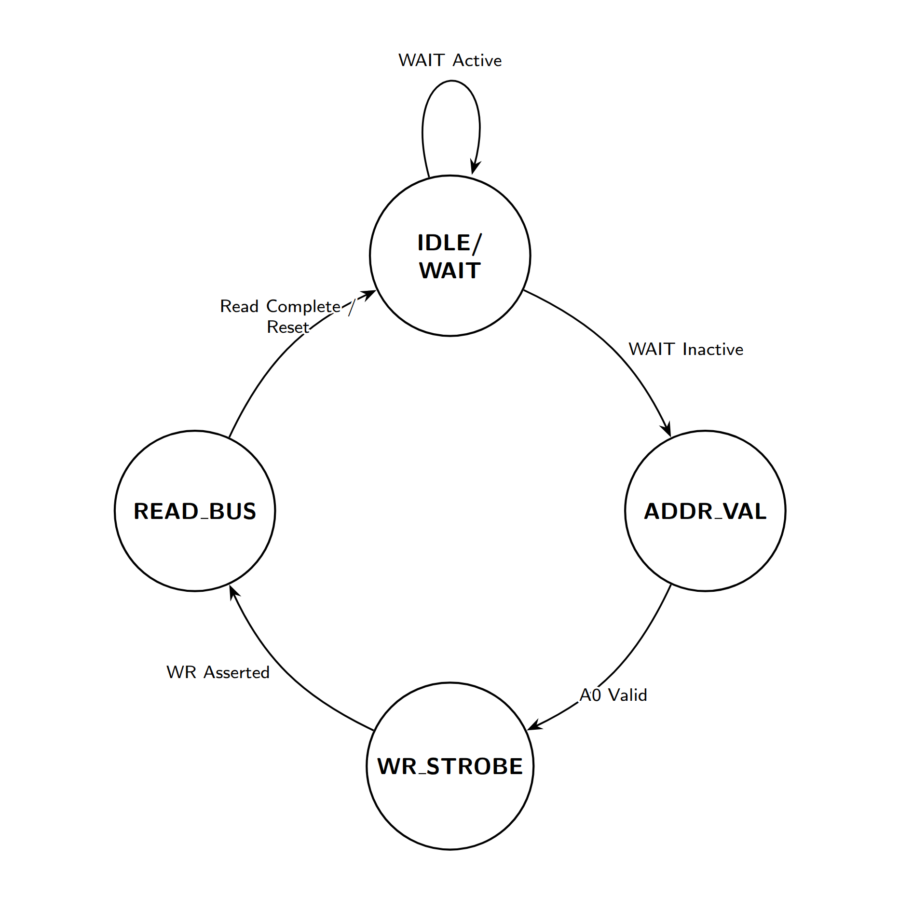

By David Collins
License note: This document discusses and quotes evidence from GPLv3-covered Z80-MBC2 material. The evidence archive includes the full GPLv3 text in LICENSE and repository-specific attribution notes in NOTICE.md.
Provenance note: The developer statement cited in the evidence archive is preserved at:
https://github.com/lindoran/Z80_MBC3_GPL_VIOLATION/EVIDENCE/provenance/Willem_Vrieze_Facebook_20230103.png
I don't usually write pieces like this. Most of the time I'm focused on fun hobbyist projects; things I'm building myself or trying out and sharing with all of you. But this issue hits close to home. The Z80-MBC3 has been around for a while now, and judging by the activity in its Facebook group, it's become pretty popular.
What matters to me, beyond the joy of building these little computers, is the trust that holds this community together. Open-source projects only thrive when that trust is respected, protected, and passed on so future hobbyists can enjoy the same sense of discovery we do today.
I'm certain I don't need to dive too deeply into what the GPL is; with Vizio, Bambu Lab, and others in the news lately, it's become a familiar topic in the circles we all follow. Most of the time, these stories involve large companies with established brands and millions of dollars tied up in legal battles.
But what happens when a hobbyist runs into the same problem? Where does a small developer turn when someone blatantly disregards the trust that keeps this community alive, all for personal gain or borrowed accolades?
In the end, it often falls to us in the retro community; to speak up, enforce the standards we care about, and vote with our voices and our wallets. And today, that's exactly what we're going to do.
I tried to provide as much information as I have, but if you want to skip to just the facts behind the actual compliance issue go ahead and skip to the section "Where we are now" if you are already caught up, or if you actually were around in the Z80-MBC2 group in 2021 you probably would want to start there.
Where do we start? Best to start from the beginning with the original: The Z80-MBC2 is a computer produced by Just4Fun (Fabio Defabis) for free — on the internet for anybody to build and make. Originally based off of the Z80-MBC dubbed the $4 Z80 computer (MBC for mobile, breadboard computer). A small computer that uses an ATmega32A as an IO controller that can stage the RAM and interface the Z80 at speed using a simple easy to follow wait/grant architecture. The Z80-MBC2 took this design further and produced a kit computer and the basis for several other computers all which share its form factor. This was immensely popular and beloved. Eventually, Fabio went on to produce several more designs, with similar chips such as the NEC V20 and the Motorola 68008. Simply, just for the fun of it. All of Fabio's projects are open source, and free for anybody to download and try out including the board fabrication details and schematics.
Much of the community activity around this computer and the whole family of MBC designs took place on Facebook. At the height of the 2020 coronavirus pandemic, the Z80-MBC2 Facebook group became the center of it all. Countless builds were completed during that time, with users helping each other, sharing fixes, and contributing enhancements. Some of the most impressive work came out of that collaboration, including support for Fuzix, the POSIX-based UNIX-like environment for the Z80. The atmosphere was one of camaraderie, generosity, and genuine enthusiasm.
The period from 2019 through late 2021 was very formative for me as a maker, and I owe a lot of what I am to Fabio and the wonderful people in the Z80-MBC2 Facebook group. A lot of things were designed, shared, and improved during that time, all built on the same trust and community spirit that brought us together in the first place.
There's really a lot that happened to get us to where we are today. At one point, the maker of the Z80-MBC3 was active in the Z80-MBC2 group, showing off his designs and trying to drum up interest. At the time I was deep into developing my first 6809 computer, so I wasn't as active in the scene as others were, but from the posts I did see, the way this maker carried himself felt different, kind of odd — but more Z80 computers was a good thing right?
Before long, he was approached by Fabio and several others in the community, mostly to politely ask if he might consider changing the name. The concern was simple: people joining the group to build a Z80-MBC2 were getting confused, ordering the wrong thing, and then needing support. Support that was hard to give, because this maker hadn't released source code or schematics yet, but was already selling computers.
At the time, none of this seemed especially alarming, and saying that now makes me feel naive. But in 2021, when this all started, nobody expected things to end up where they are today. Nobody in our little community had ever dealt with anything like this before. We all trusted each other, and that's right about when things started to get out of hand.
People began showing up in the group asking for help. At first we handled things the way we always did; we tried to be helpful. But the tools for flashing were different, there were no schematics, and everything about it felt off compared to what we were used to. It got harder to support people, and folks started getting frustrated. Some even got mad at the wrong maker because of the confusion, and it was starting to look like the maker of the MBC3 wasn't going to be as helpful as the rest of us were being with our version of our little computer.
So yes, that's a lot of background for what turned out to be a very easy-to-verify GPL violation. Going forward, we'll refer to the maker behind the Z80-MBC3 simply as "the maker." That's because the focus here is the compliance issue itself. The goal is straightforward: the repository for the derivative work needs to provide the source code and include the GPL license so the project can be brought into compliance.
This isn't about defaming anyone or shaming people who bought or built the computer. Most folks in the hobby have no idea there's a compliance problem at all. They're just enjoying a project that has brought a lot of people joy over the years, and that's a wonderful thing. If the maker wants to come forward and explain why the source code has been missing from the repository for nearly five years, that's entirely up to them. The reason isn't as important as the outcome.
The maker behind the Z80-MBC3 appears to have used GPLv3-protected copyleft code in the following non-compliant ways:
The Z80-MBC3 firmware appears non-compliant in the following ways:
One of the clearest problems is the iLoad payload issue. The Z80-MBC2 firmware includes a PROGMEM-stored block of Z80 machine code called boot_A_[]. This is the iLoad Intel-Hex loader for the Z80 CPU. It's not AVR code. It's not Arduino code. It's raw Z80 machine code, embedded as a static array inside the MBC2's GPL-licensed source.
In the MBC2 source, it appears like this:
const byte boot_A_[] PROGMEM = {
0x31, 0x10, 0xFD, 0x21, 0x52, 0xFD, 0xCD, 0xC6,
0xFE, 0xCD, 0x3E, 0xFF, 0xCD, 0xF4, 0xFD, 0x3E,
0xFF, 0xBC, 0x20, 0x10, 0xBD, 0x20, 0x0D … };That array compiles into a 618-byte block inside the MBC2 .hex file.
Verified match in suspect binary:
| Reference Binary | Suspect Binary | |
|---|---|---|
| Offset | 0x0582 | 0x440D |
| Match Length | 618 bytes | 618 bytes |
| Match Percentage | 100% match | |
When the suspect Z80-MBC3 firmware was converted to raw binary and analyzed, that exact same 618-byte block appeared inside it — byte-for-byte, with no changes, no reassembly, and no differences in internal jump offsets.
The match is perfect.
This cannot happen through independent development. Z80 machine code is extremely sensitive to offsets; even a one-byte shift changes the entire binary. A 618-byte perfect match means the code was copied directly from the MBC2 source.
The MBC3 firmware also contains the string:
iLoad - Intel-Hex Loader - S200718That version stamp (S200718) is the internal date tag from the MBC2 project. No independently written loader would carry that exact string.
This is the most direct technical evidence. Whoever created the MBC3 firmware either copied the iLoad payload directly or modified the MBC2 code and recompiled it. Either way, it is direct use of GPLv3-protected code, and under GPLv3 the corresponding source and license notices must be provided when the derived firmware is distributed.
The Z80-MBC2 defines a virtual I/O architecture built around a tight dispatch loop and a simple wait/grant handshake. The Z80 CPU communicates with the AVR by writing specific numeric opcodes to I/O ports. When the suspect Z80-MBC3 firmware was analyzed, the full opcode table from the MBC2 source was searched across all AVR registers.
This opcode evidence is supporting evidence rather than the central proof by itself: a raw binary search for CPI rX,<opcode> can include coincidental comparisons elsewhere in the program. Its significance is the pattern: nearly the entire MBC2 virtual I/O vocabulary appears in the suspect firmware, while the one missing opcode, 0x89 SYSIRQ, was a late MBC2 addition.
Result: 29 of 30 opcode constants were found in AVR CPI comparison instructions:
| Opcode | Function | In Suspect |
|---|---|---|
| 0x00 | USER LED | Yes |
| 0x01 | SERIAL TX | Yes |
| 0x03 | GPIOA Write | Yes |
| 0x04 | GPIOB Write | Yes |
| 0x05 | IODIRA Write | Yes |
| 0x06 | IODIRB Write | Yes |
| 0x07 | GPPUA Write | Yes |
| 0x08 | GPPUB Write | Yes |
| 0x09 | SELDISK | Yes |
| 0x0A | SELTRACK | Yes |
| 0x0B | SELSECT | Yes |
| 0x0C | WRITESECT | Yes |
| 0x0D | SETBANK | Yes |
| 0x0E | SETIRQ | Yes |
| 0x0F | SETTICK | Yes |
| 0x10 | SETOPT | Yes |
| 0x11 | SETSPP | Yes |
| 0x12 | WRSPP | Yes |
| 0x80 | USER KEY | Yes |
| 0x81 | GPIOA Read | Yes |
| 0x82 | GPIOB Read | Yes |
| 0x83 | SYSFLAGS | Yes |
| 0x84 | DATETIME | Yes |
| 0x85 | ERRDISK | Yes |
| 0x86 | READSECT | Yes |
| 0x87 | SDMOUNT | Yes |
| 0x88 | ATXBUFF | Yes |
| 0x89 | SYSIRQ | No |
| 0x8A | GETSPP | Yes |
| 0xFF | No operation | Yes |
The missing SYSIRQ (0x89) opcode was added late in the MBC2 development cycle. Its absence in the MBC3 firmware lines up with the idea that this version was ported from an earlier MBC2 revision (version S200718), not the final one; this further supports that it was derived from a specific known version of the MBC2 source tree.
The odds of independently designing a Z80 peripheral system that uses nearly the entire same numeric opcode vocabulary, in the same roles, are extremely low. This pattern does not carry the same weight as the exact 618-byte iLoad payload match, but it strongly supports the conclusion that the MBC3 firmware was derived from the MBC2 IOS design.
To fully confirm this, deeper disassembly would be needed, but based on the opcode behavior and the way iLoad and other compatible programs run identically on both systems, the evidence points strongly to a direct port of the MBC2 firmware.
Where the overall analysis really started was with strings. Strings are stored in the binary exactly as they appear when sent over serial, so standard tools like grep, strings, and other POSIX utilities can pull them out with simple shell scripts. This made it the easiest place to begin.
From the suspect Z80-MBC3 firmware, 58 strings were extracted. Of those, 25 entries appear in both binaries; one entry is whitespace-only padding, leaving 24 meaningful non-whitespace string matches. These are not generic messages, and many of them are highly specific to the MBC2 firmware. These include menu text, error messages, and filenames used by the virtual ROM loader.
Verified offsets:
| String | Suspect Offset | Notes |
|---|---|---|
| 0: No change ( | 0x0371 | Boot/menu option text |
| AUTOBOOT.BIN | 0x4374 | Virtual ROM filename |
| Address violation! | 0x44DE | iLoad error |
| BASIC47.BIN | 0x4381 | Virtual ROM filename |
| COS.BIN | 0x43C5 | Virtual ROM filename |
| CPM22.BIN | 0x4399 | Virtual ROM filename |
| CPMLDR.COM | 0x43AE | Virtual ROM filename |
| Checksum error! | 0x44C6 | iLoad error |
| DSxNAM.DAT | 0x4685 | Virtual disk naming convention |
| DSxNyy.DSK | 0x4690 | Virtual disk naming convention |
| Disk Set | 0x0486 | Disk management UI |
| Enter your choice > | 0x029D | Menu prompt |
| FORTH13.BIN | 0x438D | Virtual ROM filename |
| IOS: Check SD and press a key to repeat | 0x03B3 | SD error prompt |
| IOS: Current | 0x022B | Status/menu text |
| IOS: Select boot mode or system parameters: | 0x0383 | Main menu header |
| Load error - System halted | 0x4485 | Fatal iLoad error |
| QPMLDR.BIN | 0x43A3 | Virtual ROM filename |
| Starting Address: | 0x4472 | iLoad prompt |
| Syntax error! | 0x44B8 | iLoad error |
| UCSDLDR.BIN | 0x43B9 | Virtual ROM filename |
| Waiting input stream... | 0x44A0 | iLoad status message |
| iLoad - Intel-Hex Loader - S200718 | 0x444F | Carries MBC2 version date |
| iLoad: | 0x44D6 | iLoad message prefix |
The virtual disk filenames (BASIC47.BIN, FORTH13.BIN, CPM22.BIN, and so on) are especially important. These filenames come directly from the MBC2's virtual ROM system. An independently written Z80 SBC firmware could have used any filenames at all. Choosing these exact names strongly suggests direct copying of the MBC2's file access logic.
While it's technically possible that some of these messages could come from reverse engineering, the combination of filenames, menu text, error messages, and the internal iLoad version string makes that unlikely. A unique UI would normally have its own error strings, its own menu layout, and its own naming conventions. The fact that these match the MBC2 firmware byte-for-byte is more than coincidence; it's an evidence trail of direct reuse of GPL-protected code.
The core of both firmwares is a polling loop that monitors the Z80 bus for I/O transactions. The firmware has to have a way to interface the bus without causing an issue during its Z80 free-run state. In other words, the Z80 is mastering the bus and using the AVR microcontroller — in the case of both boards — as a specialized IO controller with a specific interface.
The logic sequence in both projects is simplified:

While the write request loop is similar and inherently locked to the main state machine. The code for both projects is tied specifically to this logic and both projects clearly use it to dispatch all IO functions as stated above. The Z80-MBC3 project follows the same logical loop, as demonstrated by reverse engineering the disassembly code in the following ways:Z80-MBC2 source (S220718-R290823_IOS-Z80-MBC2.ino):
// Pin definitions: WAIT_=PB3, AD0=PC2, WR_=PC3
if (!digitalRead(WAIT_)) {
if (digitalRead(A0_)) {
if (!digitalRead(WR_)) {
ioOpcode = PINA; // store opcode from data bus
digitalWrite(WAIT_, HIGH); // release WAIT
}
}
}Z80-MBC3 disassembly (verified at 0x193C):
193c: 16 99 sbic 0x02, 6 ; skip if VPORTA bit 6 (PA6/WAIT) clear
193e: 12 c0 rjmp .+36 ; WAIT not active -- loop back
1940: 11 99 sbic 0x02, 1 ; skip if VPORTA bit 1 (PA1/A0) clear
1942: 42 c0 rjmp .+132 ; A0=0 (read cycle) -- branch
1944: 8a b1 in r24, 0x0a ; read VPORTC
194a: 83 ff sbrs r24, 3 ; skip if VPORTC bit 3 (PC3/WR) set
194c: 28 c1 rjmp .+592 ; WR not active -- branch
194e: 8e b1 in r24, 0x0e ; read data bus (VPORTE = data)
1950: 80 93 6e 31 sts 0x316E,r24 ; store as ioOpcode
1954: 10 93 80 01 sts 0x0180,r17 ; release WAIT lineThe ATmega4809 uses different physical pins and I/O register addresses than the ATmega32A, but the three-signal decision tree (WAIT → A0 → WR → read) is identical in structure. This is the signature of porting the same source code to a different MCU, not independent design. Furthermore, due to specific portability options inside the original source macros, it would be very easy to reassign pin values inside Arduino and simply recompile the source.
I am not a lawyer, but the compliance issue is straightforward enough to describe in technical terms. The upstream Z80-MBC2 project is publicly declared GPLv3, and GPLv3 requires that conveyed modified versions and object-code distributions carry the proper license notices and corresponding source access.
The apparent compliance failures are:
What is so strange is the reason behind doing something like this. The maker used protected code but failed to release the source for the corresponding project. I am uncertain what the gain is here. The maker released all the schematics and gerber files to produce boards, released documentation on how to use the offending firmware package to flash the firmware, and even names the original project as if his project is the literal successor to it. It is confusing, and frustrating to say the least.
Generally speaking, the hope is that the maker will do the right thing, release the source code, and then continue to sell boards, develop the project, and provide support (or not; that is not a requirement of the license). If that does not happen, it is hard to say what will happen next; only time can tell.
What I will do is follow up with several agencies who support these kinds of projects. I will be sending copies along with compliance requests to Lectronz and GitHub in approximately ten days from the release of this. I had believed, and still do believe, that this is a giant misunderstanding. But at this point the number of chances and kind requests to do the right thing have gone along the wayside. If by that time the maker decides to at the bare minimum respond with a timetable of when compliance can happen, then we can discuss other outcomes. I just do not see any other recourse that is both fair and reasonable.
If you have built a Z80-MBC3 and have been told by the maker that the source code for the firmware would not be released to you, I encourage you to leave a comment and get in touch. I want to assure all of you that this is not about your use or purchase of the project. If for any reason the end result is that the firmware files are no longer available from the maker's usual locations, I will do everything in my power to produce and release compliant firmware. If you are interested in helping with that as a project, please leave a comment as well.
That is about it. I hope everything works out for the maker and for his project. In my experience, situations like this usually do work out, and there is still time for a positive outcome.
{kind=link}